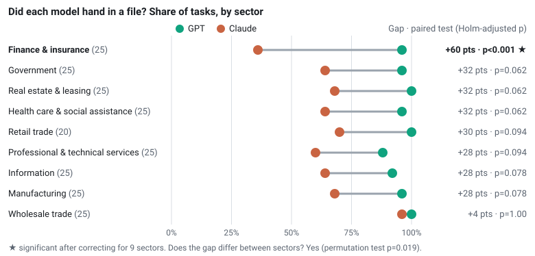
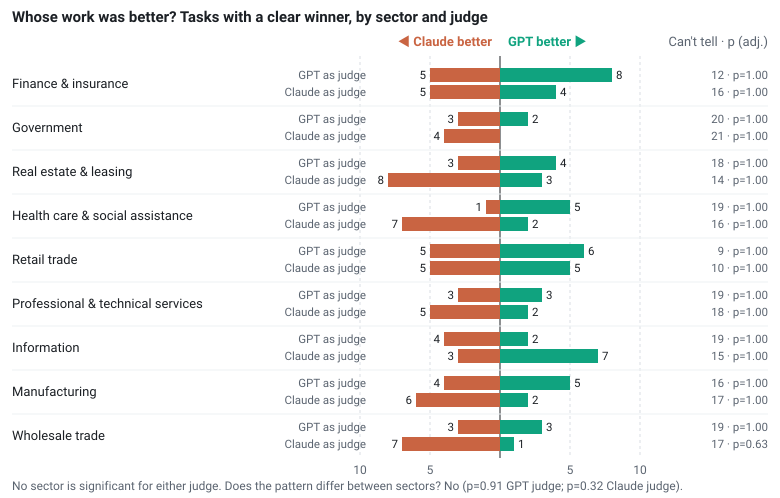

Results by sector: the industry view
Does the GPT-vs-Claude picture change from one industry to another? This page compares both models side by side, before the per-company pages go deeper on each model.
In plain English: GDPval groups its 220 tasks into nine sectors (industries), 20–25 tasks each. GPT handed in a file more often than Claude in every sector, but the size of that lead varies a lot: it is largest in Finance & insurance (24 vs 9 of 25) and almost zero in Wholesale trade (25 vs 24). On the quality of the work, no sector shows a statistically significant difference, and the quality pattern does not change by sector.
1. Handing in a file

Each row is one sector. The green dot is the share of that sector's tasks where GPT finished and handed in a file; the orange dot is Claude. A longer grey line means a bigger gap. The number on the right is the gap in percentage points and the corrected p-value (smaller means less likely to be luck).
- Significant in 1 sector: Finance & insurance. Claude did not finish 15 of its 25 conversations within the budget, so it often ran out before saving a file.
- Suggestive in 7 more sectors: GPT's lead is 28–32 points and each would pass a single test on its own, but not after correcting for testing nine sectors at once. With only 25 tasks per sector, gaps this size are hard to confirm.
- No gap in Wholesale trade: 25 vs 24.
- Does the gap really differ between sectors? Yes. A test that shuffles tasks between sectors at random produced variation this large only about 19 times in 1,000 (p=0.019). The variation comes from Claude: GPT delivers at a similar rate everywhere.
2. Whose work was better

For each sector there are two bars, one per judge. Orange bars to the left count tasks where that judge's scores put Claude clearly ahead; green bars to the right count GPT clearly ahead. The grey number on the right counts tasks with no clear winner (score ranges overlap, an exact tie, or a missing grade). Most tasks fall in that last group, so the bars are built on small numbers.
- No sector is significant for either judge. The smallest corrected p-value is 0.63.
- The judges lean opposite ways. Across all sectors, GPT as judge picks GPT 38–31 (p=0.47, not significant); Claude as judge picks Claude 50–26 (p=0.008). Each judge appears to favor its own model, so neither result is a reliable quality verdict.
- No sector stands out. The quality pattern is consistent across sectors (p=0.91 with GPT as judge, p=0.32 with Claude as judge).
All the numbers
The detail behind the two charts, one table each. Sectors are listed from the largest delivery gap to the smallest.
Handing in a file
| Sector | GPT | Claude | Gap points |
Claude ran out | Only one GPT / Claude | Result |
|---|---|---|---|---|---|---|
| Finance & insurance | 24/25 | 9/25 | +60 | 15 | 15 / 0 | GPT ahead · significant p<0.001 · adj. <0.001 |
| Government | 24/25 | 16/25 | +32 | 7 | 8 / 0 | GPT ahead · suggestive p=0.008 · adj. 0.062 |
| Real estate & leasing | 25/25 | 17/25 | +32 | 4 | 8 / 0 | GPT ahead · suggestive p=0.008 · adj. 0.062 |
| Health care & social assistance | 24/25 | 16/25 | +32 | 8 | 8 / 0 | GPT ahead · suggestive p=0.008 · adj. 0.062 |
| Retail trade | 20/20 | 14/20 | +30 | 4 | 6 / 0 | GPT ahead · suggestive p=0.031 · adj. 0.094 |
| Professional & technical services | 22/25 | 15/25 | +28 | 9 | 8 / 1 | GPT ahead · suggestive p=0.039 · adj. 0.094 |
| Information | 23/25 | 16/25 | +28 | 7 | 7 / 0 | GPT ahead · suggestive p=0.016 · adj. 0.078 |
| Manufacturing | 24/25 | 17/25 | +28 | 7 | 7 / 0 | GPT ahead · suggestive p=0.016 · adj. 0.078 |
| Wholesale trade | 25/25 | 24/25 | +4 | 1 | 1 / 0 | No clear difference p=1.00 · adj. 1.00 |
"Claude ran out" counts tasks where Claude hit a limit before finishing. "Only one" counts tasks where just one model delivered; these are the tasks the significance test uses. "adj." is the p-value after correcting for nine sectors.
Whose work was better
| Sector | GPT's judge GPT – Claude wins |
Claude's judge GPT – Claude wins | Result |
|---|---|---|---|
| Finance & insurance | 8 – 5 adj. p=1.00 | 4 – 5 adj. p=1.00 | No significant difference |
| Government | 2 – 3 adj. p=1.00 | 0 – 4 adj. p=1.00 | No significant difference |
| Real estate & leasing | 4 – 3 adj. p=1.00 | 3 – 8 adj. p=1.00 | No significant difference |
| Health care & social assistance | 5 – 1 adj. p=1.00 | 2 – 7 adj. p=1.00 | No significant difference |
| Retail trade | 6 – 5 adj. p=1.00 | 5 – 5 adj. p=1.00 | No significant difference |
| Professional & technical services | 3 – 3 adj. p=1.00 | 2 – 5 adj. p=1.00 | No significant difference |
| Information | 2 – 4 adj. p=1.00 | 7 – 3 adj. p=1.00 | No significant difference |
| Manufacturing | 5 – 4 adj. p=1.00 | 2 – 6 adj. p=1.00 | No significant difference |
| Wholesale trade | 3 – 3 adj. p=1.00 | 1 – 7 adj. p=0.63 | No significant difference |
Wins count only tasks where a judge picked a clear winner; every other task had no clear winner and is left out.
How significance was tested
- Matched pairs. Both models attempted the same tasks, so each test compares them task by task rather than as two separate groups.
- Handing in a file: an exact McNemar test. Only tasks where one model delivered and the other did not (the “Only one” column) carry information about which is better.
- Quality: an exact sign test on tasks with a clear winner, run separately for each judge. Ties and unclear tasks are left out of the test, never counted as wins for either side, and the two judges are never averaged.
- Correcting for nine sectors. Testing nine sectors gives nine chances of a fluke, so p-values are Holm-adjusted (“adj.”). A result is called significant when the adjusted p is below 0.05.
- Does the gap differ between sectors? A permutation test: tasks are shuffled between sectors 100,000 times to see how often the sector-to-sector differences are as large as the real ones.
Next: what each company could improve
The company pages turn these patterns into specific weaknesses and suggested training data for each model's team.
For OpenAI (GPT)
GPT delivered almost everywhere; the open question is whether its files meet every requirement.
See GPT findings →For Anthropic (Claude)
Claude's delivery gap is largest in Finance & insurance, where it often ran out of room before saving a file.
See Claude findings →